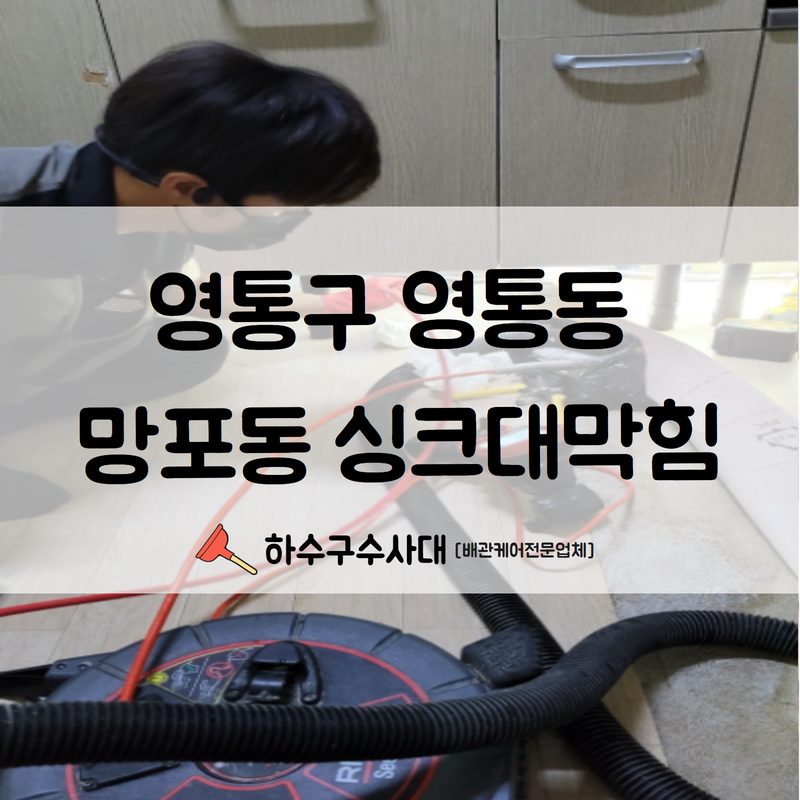
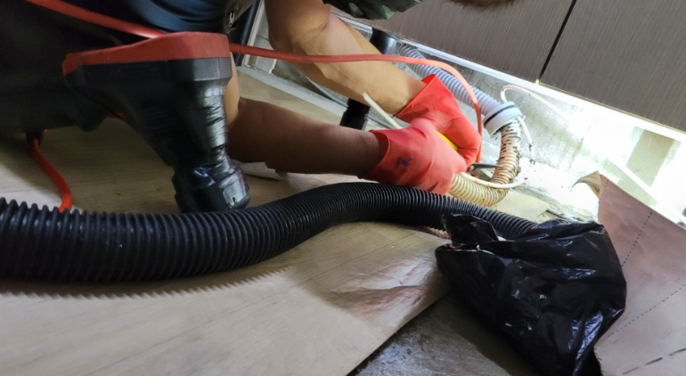
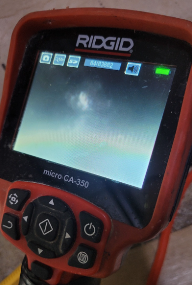
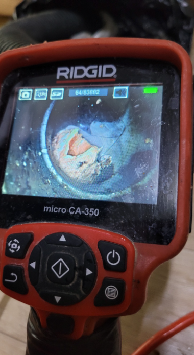
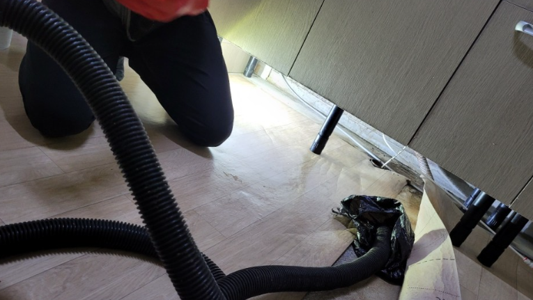
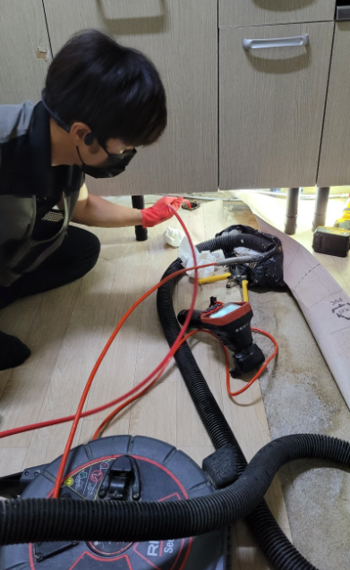
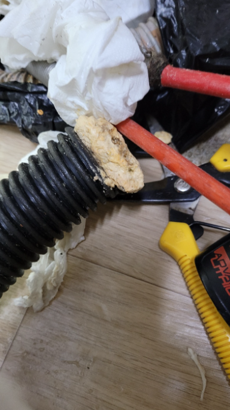

🏠 영통구 영통동 망포동 싱크대막힘 더 이상 사용에 어려움을 겪지않으시게 깔끔하게 처리완료해드렸습니다!
수원 망포동 싱크대막힘 전문 시공 후기

📋 작업 개요
- 위치: 수원 망포동, 망포동, 수원
- 서비스 유형: 싱크대막힘, 하수구막힘, 배관막힘, 역류해결, 뚫는업체, 배관청소, 고압세척
- 작업 일시: 2022. 8. 14. 20:19
- 업체명: 하수구수사대 (010-5615-2118)
🔍 문제 상황
안녕하세요.하수구수사대 입니다.반갑습니다.
모든 문제는 갑자기 발생하여 우리를 당황스럽게 만드는데요.편하게 이용하고 있던 하수구가 막혀 역류가 되고 물이 정상적으로 배수되지 않는다면 누구나 당황스러울 수 있습니다.
빠르고 정확한 대처를 해야만 신속하게 상황을 해결할 수 있습니다.
추후 또 같은 문제로 인하여 불편함을 겪는 일이 없도록 잘 대처하는 것이 중요합니다.얼마전 영통구 영통동 망포동 싱크대막힘으로 배수구까지 막혀 저희 하수구수사대를 불러주신 고객님이 계셨는데요.
현장에 가서 살펴보니 다세대 주택이었기 때문에 내부에 거주하고 계시는 많은 세대가 동시에 불편함을 겪고 있는 상황이었습니다.그래서 각각의 세대에서 어떠한 불편함이 발생하고 있는지 꼼꼼하게 체크부터 진행되었습니다.

🔎 원인 분석
💡 전문가 진단: 빠르고 정확한 대처를 해야만 신속하게 상황을 해결할 수 있습니다.
이렇게 여러 세대가 거주하는 건물의 경우에는
한번 작업 시 각 세대의 동의를 구해야 하기 때문에 일정 조율 및 작업 시간대등을 신중하게 정하는 것이 좋습니다.내부 상태를 살펴보니 몇몇 세대에서는 물이 빠르게 배수되지 않아서 싱크대나 욕실을 사용할 때 어려움을 겪고 있던 상황이였는데요.
앞서 말씀드렸듯 1층에서는 이미 역류로 인하여 엉망이 된 모습이였습니다. 1층은 상가 건물 공용 화장실이었기에, 배수구막힘으로 인한 피해가 더욱 컸던 것으로 파악이 되었습니다.
문제파악을 가장먼저 진행하였습니다.
영통구 영통동 망포동 싱크대막힘을 신속하게 해결하기 위하여 내시경으로 배관의 문제 파악부터 진행했는데요. 보통 한 세대에서 발생하는 문제였다면 그 세대에 방문하여 내시경 및 뚫음을 진행하면 됩니다.

🔧 작업 과정
하지만 이렇게 여러 세대에서 동시에 문제가 보일 경우엔 메인 배관을 먼저 체크해 보고 있는데요.메인 배관으로 내시경을 투입하여 내부 상태를 먼저 파악해본 결과내시경 카메라에 비치는 배수관 내부 상태는 생각보다도 좋지 않았습니다.
주기적인 관리가 필요합니다.
전체적으로 쌓인 이물질의 양도 많았고, 아마 몇 년 이상은 단 한번도 고압세척을 진행해 주지 않은 것으로 예상되었는데요.항상 말씀드리는 내용이지만 배수관을 막힘없이 쾌적하게 사용하기 위해서는 정기적으로 배관을 세척해 주는 고압세척 과정이 반드시 필요하다는 것을 거듭 강조하여 말씀드립니다.
물론 세척 및 청소 작업에 따른 비용이 발생하긴 하지만 이는 영통구 영통동 망포동 싱크대막힘이 이미 발생한 후 원상복구를 하는 비용과 비교해 본다면 훨씬 경제적인 선택이라고 할 수 있습니다.또한 모든 세대에서 함께 노력해주시는 것이 하수구를 쾌적하게 관리하는 좋은 방법이니 참고하시길 바랍니다.
실제로 기름을 자주 사용하는 식당, 음식점, 대형 건물의 경우에는
정기적으로 꾸준하게 세척하는 곳들도 많은데요. 일반 가정집에서도 다세대 주택이나 아파트에 거주할 경우 공동배관을 주기적으로 고압세척을 받으며 관리하는 분들이 많습니다.
우리가 사용하는 모든 배수관은 하나로 연결되어 있기 때문에 우리 집에서 아무리 배수구를 통해서 이물질을 내려보내지 않고 청결하게 관리하고 있다고 해도, 다른 세대에서 조심해 주지 않으면 결국 또다시 막힘으로 인한 역류가 발생할 수 있습니다.
싱크대, 하수구 막힘 및 여러 불편사항으로 고생중이시라면 더이상


✅ 작업 완료
불편하게 사용하지마시고 하수구수사대로 연락주시기 바랍니다.
경기도 수원시 영통구 봉영로 1612 7층 710-A19호




⚠️ 주방 싱크대 배관 막힘 예방 수칙
- ✅ 기름기가 묻은 식기나 프라이팬은 설거지 전 키친타올로 반드시 기름때를 닦아내세요.
- ✅ 주기적으로 싱크대 개수대에 뜨거운 물을 가득 받아 한 번에 내려 배관 내부 기름을 씻어내세요.
- ✅ 배수구 거름망을 미세한 필터로 사용하시고 음식물 찌꺼기가 틈으로 새어 들지 않게 관리하세요.
- ✅ 베이킹소다와 식초를 뜨거운 물과 함께 일주일에 한 번씩 부어주면 배관 살균과 막힘 예방에 좋습니다.
💡 핵심 정리
- 확실한 장비 작업(내시경 점검 및 샤프트 스케일링)으로 원인을 뿌리 뽑습니다.
- 작업 후 1년 이내에 동일한 부위 재발 시 100% 무상 A/S 서비스를 보장합니다.
- 서울 · 경기 · 인천 전 지역에 24시간 언제든 긴급 출동할 수 있도록 항시 대기 중입니다.
❓ 자주 묻는 질문 (FAQ)
🚨 수원 망포동 싱크대막힘 문제로 고민이신가요?
정확한 원인 진단과 확실한 시공으로 재발 없는 해결을 약속드립니다.
24시간 긴급 출동 | 서울 · 경기 · 인천 전지역 | 1년 내 재발 시 무상 A/S